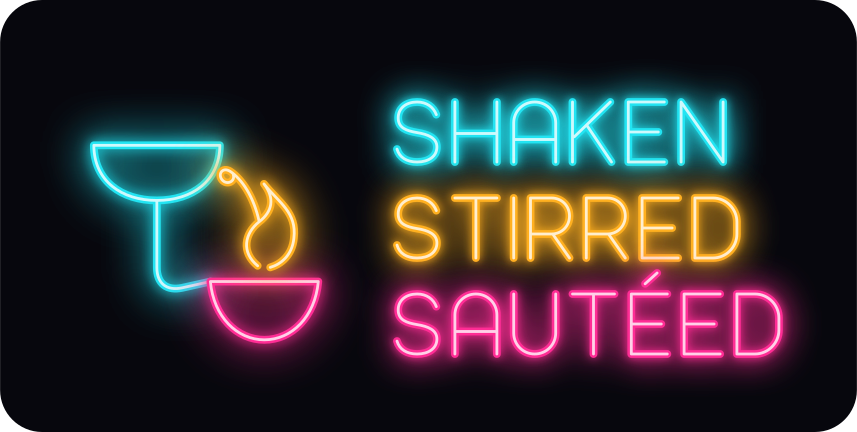
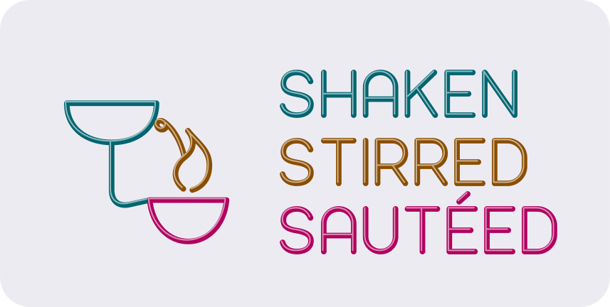
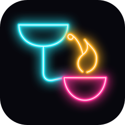
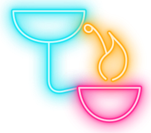
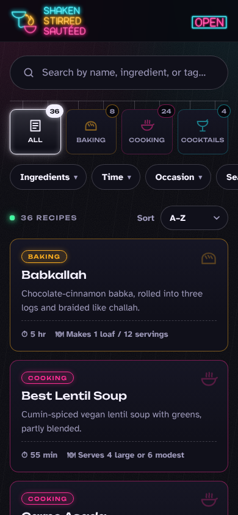
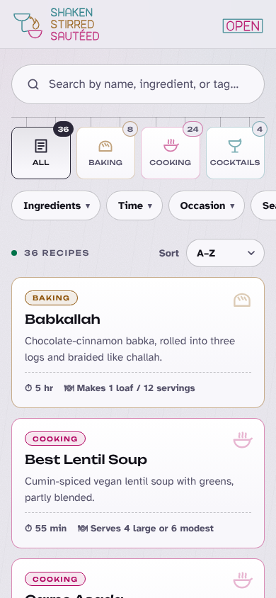
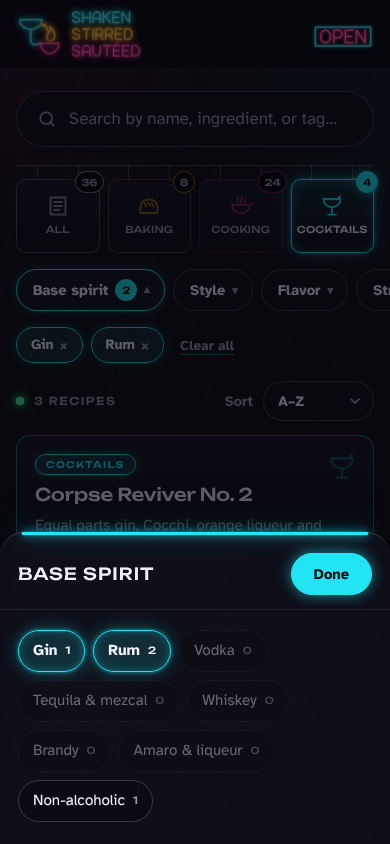
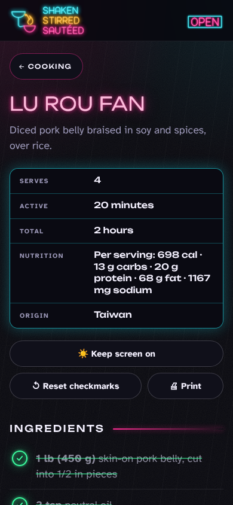
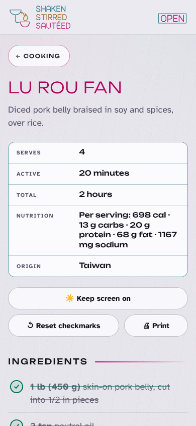

The wok stall
Lu rou fan, congee with crispy chili pork, Thai peanut sauce, a cucumber salad slapped together on the side. Cooking burns magenta, the main tube and the brand’s accent.
A brand direction for Shaken, Stirred & Sautéed
The city after dark, where all three verbs happen at once: wok flame at a hawker stall, a cocktail bar’s sign buzzing upstairs, a bakery case still lit at midnight. The brand is light emitted, not ink printed.
A personal recipe box that gets opened in the evening, mid-cook, phone propped against the backsplash, often in dim light. So the brand behaves like the street it’s named after: dark, emissive, high contrast, warm.
Lu rou fan, congee with crispy chili pork, Thai peanut sauce, a cucumber salad slapped together on the side. Cooking burns magenta, the main tube and the brand’s accent.
The Zombie, the Painkiller, a bottle of house grenadine. Cocktails glow cyan, the cold buzz of a bar sign through a rainy window.
Babkallah, lemon curd, a pavlova that has to sit in the oven overnight. Baking is sodium amber, the glow of a bakery case on a dark corner.
After dark · signs on
The default. Wet black asphalt, tubes lit, a one-time flicker when a sign ignites. Glow is reserved for display type and borders. Body text stays crisp white on black.
Daylight · signs off
Light mode is a real second state, not an inversion. The signs are switched off, so you see bare glass tubes in their unlit colour on pale concrete, with a 1px highlight where the light catches them.
One continuous neon tube: a coupe glass whose stem bends sideways into the handle of a wok, and a flick of flame rising from the wok that curls into the cocktail’s twist. One line, three verbs. The wordmark is stacked like signs on a building, each word its own tube, drawn on a custom monoline alphabet with bent-glass corners.

logo.svg. Use on asphalt (#07070D) only.
logo-daylight.svg. Unlit glass with a specular line.
icon.svg. The mark alone, lit, on a 64-unit rounded square.sign-open.svg hangs in the header window. sign-soldout.svg hangs over an empty search: its frame is burnt out and only the words are lit. Both ignite once and have -daylight versions.Do put the lit sign on asphalt black, or the daylight sign on concrete.

Do let the mark sit over a dark, steamy photo; it is light, so it reads on shadow.
Don’t add sunsets, chrome or perspective grids. This is a night market, not synthwave.
Don’t recolour the tubes. Cyan, amber, magenta, in that order, always.
Don’t stretch, skew or outline it. Bent glass has one thickness.
Don’t retype the wordmark in Unbounded. The tubes are drawn letters; a font is not the logo.
Four tubes and a street. Each category owns a tube; jade is reserved for “done”. Lit tubes glow in three layers: a white-hot core (0 0 1px #fff), the colour (0 0 6px), then a 22px halo at 60%. In daylight the same tokens resolve to darker, unlit glass that passes AA as small text.
--bg #07070DPage. Faint rain sheen at 2% white.--surface #10101ACards, sheet, steps.--raised #161624Top of a light box.--text #F4F1FFText. 18.1:1 on asphalt.--muted #9C98B8Secondary text. 7.3:1.--magenta #FF2D95Cooking · accent. 5.8:1.--cyan #22E4F2Cocktails · cues · price board. 12.9:1.--amber #FFB020Baking · waits · screen on. 11.0:1.--jade #3CFFA0Checked & done only. 15.3:1.--uv #B9A4FFComponent badge. 9.4:1.--bg #EDEBF2Page, with fine grain.--surface #F8F7FBCards, sheet, steps.--raised #FFFFFFTop of a light box.--text #12111AText. 15.9:1 on concrete.--muted #55526ASecondary text. 6.3:1.--magenta #B0005E6.6:1 on glass.--cyan #0065706.4:1 on glass.--amber #8A4E006.2:1 on glass.--jade #00734A5.5:1 on glass.--uv #5B3FC46.7:1 on glass.| Pair | Signs on | Signs off | Used for |
|---|---|---|---|
| Text on page | 18.06 | 15.85 | Body, ingredients, steps |
| Text on glass | 16.99 | 17.57 | Cards, steps, sheet |
| Muted on glass | 6.84 | 7.03 | Card blurbs, labels, counts |
| Spent text on page | 5.81 | 4.89 | Done steps, checked ingredients |
| Magenta on glass | 5.46 | 6.55 | Cooking badge, quantities |
| Cyan on glass | 12.10 | 6.36 | Cocktail badge, quantities |
| Amber on glass | 10.34 | 6.21 | Baking badge, quantities |
| Jade on glass | 14.40 | 5.54 | Check marks |
| Ink on a lit tube | 5.80 #07070D on magenta | 6.98 #FFF on magenta | Done button, current step number |
Two families, three files, all self-hosted woff2 under the SIL Open Font License 1.1.
A wide, rounded geometric face. At weight 300 its monoline strokes read exactly like bent glass tubing. Brand, recipe titles, signs, card titles, step numerals and labels.
200300500700900
Designed for low-vision readers: open counters, unambiguous 1/l/I and 0/O. Every word you cook from is set in it at 17–18px, for a dim kitchen at arm’s length.
Regular 400Bold 700
| Role | Spec | Sample |
|---|---|---|
| Recipe title (h1) | Unbounded 300 · clamp(1.9rem, 8vw, 3.4rem) · caps · +0.02em · neon in dark | Lu Rou Fan |
| Section (h2) | Unbounded 500 · 1rem · caps · +0.14em · tube rule | Steps |
| Card title | Unbounded 500 · 1.1rem · −0.005em · no glow | Congee with Crispy Chili Pork |
| Board value | Unbounded 500 · 0.9rem | Shaken, double strained |
| Sign label | Unbounded 500–600 · 0.58–0.68rem · caps · +0.03–0.14em | Cocktails · 36 recipes |
| Step / ingredient | Atkinson 400 · 18px / 1.5 | Blanch the pork belly 1 minute, drain, and rinse off any scum. |
| Body | Atkinson 400 · 17px / 1.55 | Dark rum, pineapple, orange and coconut cream, shaken. |
| Small / meta | Atkinson 700 · 0.84–0.92rem | ⏱ 2 hr · Serves 4 |
Specimen · real copy
Congee with Crispy Chili Pork
Savory rice porridge under crisped chili-garlic ground pork.
3Simmer 20 to 30 minutes, stirring occasionally, until the grains collapse and it thickens to porridge. Loosen with more broth or reduce further to suit. Salt to taste.
Rule: glow only on display type 24px and up, and on borders. Never on body, ingredients or steps.
A 4px base, generous touch targets (44px minimum, 52px for ingredient rows) and elevation expressed as light rather than shadow: a box is raised by switching its tube on.
--s1 4px--s2 8px--s3 12px--s4 16px · page gutter--s5 24px--s6 36px · between sections--s7 56px--r-pill 999px--r-box 14px--r-sign 10px--neon-soft. Active chips.--neon-box. Hover, focus, pressed, current step.Icons are bent tubes on a 24-unit grid: 1.8 stroke, round caps and joins, no fills, as if each could be made by a neon bender. They replace the emoji in the section signs and light up with their box. Ornament comes from the street itself, never from pastiche.
Banned: sunsets, chrome, perspective grids, palm trees, faux “chop suey” lettering, fake CJK ornament, looping flicker.
Live specimens built from theme.css with the exact markup the site’s JavaScript renders. Hover, focus and tap them.
Late-night, friendly, short. The voice of someone behind the counter at 11pm who’s glad you came. Lighting metaphors are seasoning: one per screen, never in instructions. Recipes themselves stay plain and precise.
| Moment | Today | Night Market |
|---|---|---|
| Result count | 36 recipes | 36 on the menu tonight |
| Search placeholder | Search by name, ingredient, or tag… | Hungry? Thirsty? Search… |
| Clear filters | Clear all | Lights off |
| Close the sheet | Done | Go |
| Wake lock | ☀️ Keep screen on | Keep the lights on |
| Reset progress | ↺ Reset checkmarks | Start over |
| Back link | ← Cooking | ← Back to the street |
| Empty filter result | Nothing matches that. Clear filters | Sold out of that. Try another filter. |
| Loading | Loading… | Warming up the signs… |
| Recipe not found | Recipe not found. | That sign’s out. Recipe not found. |
| No recipes yet | No recipes yet… | The street’s quiet. Add a recipe to the recipes/ folder. |
When recipes get photos, shoot them like it’s late and the only light is the one over the stove. The card frames the image in its tube colour, so the photo itself should be dark, warm and quiet.
Screenshots of the real pages at 390 × 844, rendered by the unchanged site JavaScript with only the stylesheet and header swapped.

Home · signs on
Home · daylight
Filter sheet
Recipe · signs on
Recipe · daylightNo build step, no JavaScript changes. The theme is a drop-in for assets/style.css.
style-guides/night-market/theme.css over assets/style.css.style-guides/night-market/fonts/ to assets/fonts/ (the theme loads ./fonts/ relative to itself). Three files, about 85 KB in total.index.html and recipe.html, replace the <a class="brand"> contents with the inline sign from preview/index.html:
<a class="brand" href="./">
<svg class="brand-sign" viewBox="-2 -2 237.6 88" … aria-hidden="true">…</svg>
<span class="brand-name visually-hidden">Shaken, Stirred <span class="amp">&</span> Sautéed</span>
</a>icon.svg to assets/icon.svg (and export it to icon-192.png / icon-512.png). Replace the theme-color meta with:
<meta name="theme-color" content="#07070D" media="(prefers-color-scheme: dark)">
<meta name="theme-color" content="#EDEBF2" media="(prefers-color-scheme: light)">theme_color / background_color in manifest.webmanifest to #07070D.CACHE in sw.js (e.g. "sss-v2") so installed phones pick up the new look.index.html, assets/home.js and assets/recipe.js.Files in this direction: theme.css · fonts/ · logo.svg · logo-daylight.svg · mark.svg · icon.svg · icon-baking.svg · icon-cooking.svg · icon-cocktails.svg · icon-all.svg · sign-open.svg · sign-open-daylight.svg · sign-soldout.svg · sign-soldout-daylight.svg · preview/ · guide.css · index.html